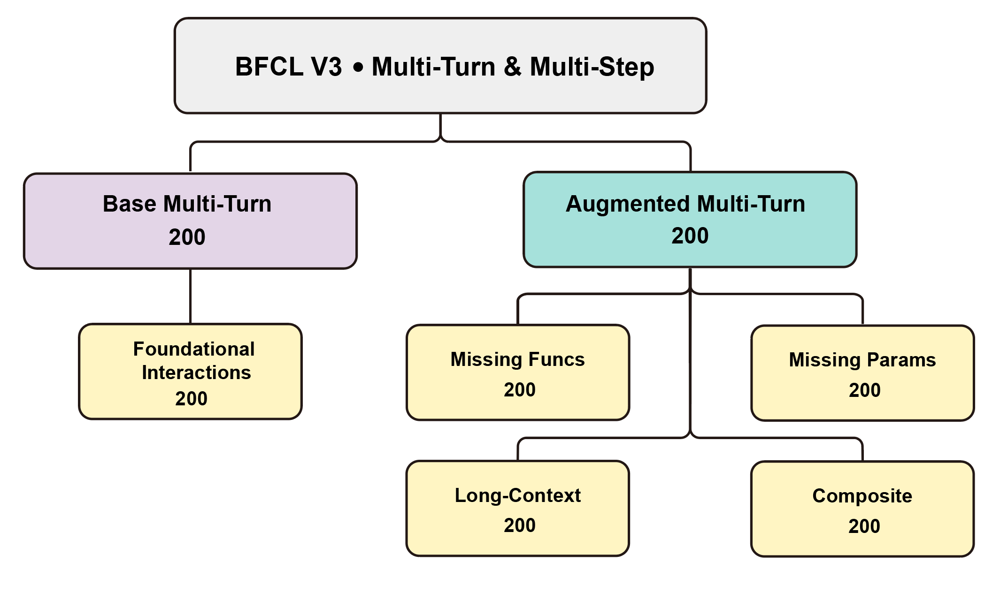
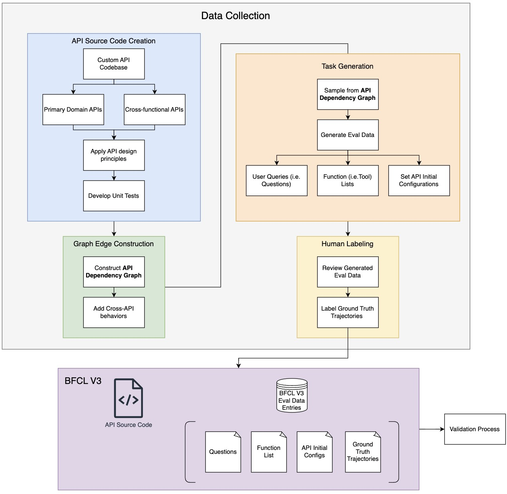
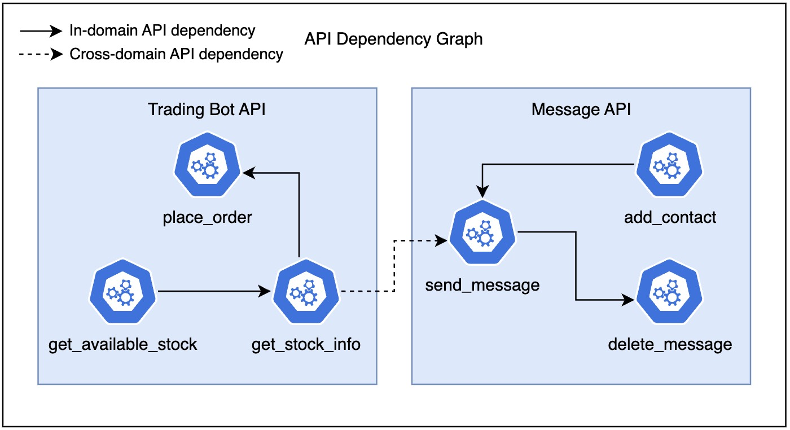
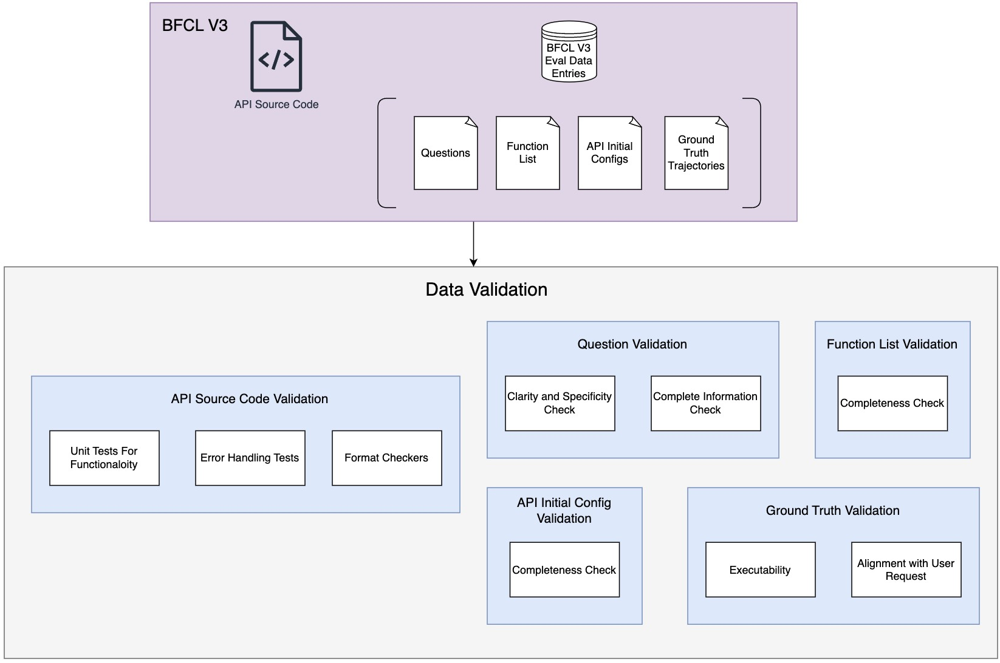
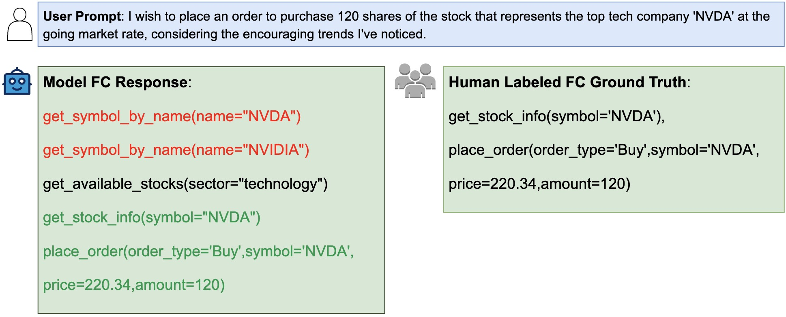

The Berkeley Function-Calling Leaderboard (BFCL) V3 makes a big step forward by introducing a new category for multi-turn and multi-step function calls (tool use). Only in BFCL V3, you might see a model loop over and over—listing a directory, trying to write to a file that isn't there, and then listing again. Or it might demand your username and password even though you've already logged in and are browsing other users' posts. Such scenarios are only possible when a model can use multiple turns and steps in its function calls.
Note that BFCL V3 still includes the Expert Curated (Non-live) dataset from BFCL V1 and the User Contributed (Live) dataset from BFCL V2. On top of that, it now tests how well models can handle back-and-forth (multi-turn) and step-by-step (multi-step) interactions.
If you're new to single-turn, single-step function calling, be sure to check out our earlier blog post for more background. That post explains how a model should pick a single function and fill in its parameters without asking follow-up questions.
With BFCL V3, we're looking at more complex tasks. Multi-turn function calls (user t0, assistant t1,
user t2, assistant t3, ..) let models interact with the user back-and-forth, asking questions and
refining their approach. Multi-step calls (user t0, assistant t1,
assistant t2,..) let a model break its response into smaller parts before giving a final answer.
This setup mimics real-world cases where an AI might need to plan, gather info, and chain several actions
together.
Another new twist in BFCL V3 is how we check the model's answers. Instead of dissecting function parameter pairs using AST and matching them in a list of possible answers, we now verify the actual state of the API system (like file systems or booking systems) after the model runs its functions. This gives us a more realistic way to see if the model did the right thing.
Quick Links:
In this post, we'll explain the difference between multi-step and multi-turn function calling and why both matter in real use cases. Then we'll highlight what sets this new benchmark apart and share our findings after testing top models. Finally, we'll walk through how we built the evaluation dataset and why having human-annotated data is so important.
In a single-turn interaction, assistant can fulfill a user's request by making one function call. These requests are typically straightforward, self-contained, and state-agnostic (i.e., do not rely on prior context).
Multi-step interactions require the assistant to execute multiple internal function calls to address a single user request. This process reflects the assistant's ability to proactively plan and gather information to deliver a comprehensive response. The user only interacts with the model once (at the very beginning), and the model then interacts with the system back-and-forth to complete the task.
Multi-turn interactions involve an extended exchange between the user and the assistant, consisting of multiple conversational turns. Each turn may involve several steps, and the assistant must retain and utilize contextual information from previous exchanges to handle follow-up queries effectively. The user will interact with the model multiple times throughout the process.
| Dataset Name | Q - A Curation | Validation | Multi-Step | Multi-Turn | Implicit Action | Self-Correct | Irrelevancy | Long Ctx |
|---|---|---|---|---|---|---|---|---|
| BFCL-v2 | Human | Human | ✗ | ✗ | ✗ | ✗ | ✓ | ✗ |
| AgentBoard | Human | Human | ✓ | ✗ | ✗ | ✗ | ✗ | ✗ |
| τ-bench | Synthetic | Human | ✓ | ✓ | ✓ | ✗ | ✗ | ✗ |
| MMAU | Human | Human | ✓ | ✓ | ✗ | ✓ | ✗ | ✗ |
| Tool Sandbox | Human | Human | ✓ | ✓ | ✓ | ✓ | ✓ | ✗ |
| BFCL-v3 | Human | Human | ✓ | ✓ | ✓ | ✓ | ✓ | ✓ |
 Berkeley Function-Calling Leaderboard (BFCL V3 • Multi-Turn & Multi-Step Function Calling) Data Composition
Here we visualize the data statistics of the BFCL V3 Base Multi Turn dataset (the augmented categories follow similar distributions):
In this section, we detail our data curation methodology for the BFCL V3 • Multi-Turn & Multi-Step dataset. The dataset curation process consists of hand-curated data generation for four components of BFCL V3 • Multi-Turn & Multi-Step: API codebase creation, graph edge construction, task generation, and human-labeled ground truth multi-turn trajectories, as well as a comprehensive data validation process.
Our dataset curation process consists of 3 parts. Manual curation of APIs and mapping out upstream/downstream relations in the representation of a Graph. Data scaling through randomly sampling execution paths. Humans label ground truth and verify execution results based on initial configurations.
Our team believes that synthetic dataset by itself alone is not enough and human labeling is essential. We take care of the APIs created by humans as we believe human can generate more connected and densely important functions useful for evaluation purposes. Even with this, we went through 11 rounds of data-filtering, highlighting the importance and challenges of function calling.
The foundation of the dataset begins with creating a custom API codebase inspired by common real-world APIs. These APIs span eight domains—four main APIs and four companion APIs—which represent practical use cases:
Primary Domain APIs:
startEngine(...), displayCarStatus(...),
estimate_distance(...)
get_stock_info(...), place_order(...),
get_watchlist(...)
book_flight(...),
get_nearest_airport_by_city(...), purchase_insurance(...)
ls(...), cd(...), cat(...)
Cross-functional APIs:
send_message(...), delete_message(...),
view_messages_received(...)
post_tweet(...), retweet(...),
comment(...)
create_ticket(...), get_ticket(...),
close_ticket(...)
logarithm(...), mean(...),
standard_deviation(...)
All eight domains took inspiration from our experience with Open Functions data collection and public interest in popular agent application domains.
The four primary API domains are evenly distributed across the test cases in Base, and Augmented Multi-Turn. For example, there are 200 test entries in Base category and 0-49 utilizes Gorilla File System, 50-99 utilizes Vehicle Control, 100-149 utilizes Trading Bots, and 150-199 utilizes Travel Booking.

Graph Edge Construction
Once the API codebase is established, we construct a graph where each function represents a node. We manually map out direct edges, meaning a function's output is an input of the downstream function. This graph allows us to model cross-API behaviors, simulating realistic multi-turn function calls across different domains. Whenever we need a dataset, we sample a node on the graph, and randomly traverse through the graph to generate an execution path. Through the execution path, we are able to extrapolate the scenario that will be presented to the LLMs.
With the graph of functions in place, the next step is generating the actual data points for the dataset. This involves creating the following components:
We craft user queries that prompt the model to invoke a series of function calls. The questions vary in tone and style to simulate different user personas and interaction scenarios.
Precisely, we adopted the dataset from Persona Hub to generate a diverse evaluation dataset with different personas ranging from people with different occupations, age groups, etc. For example, personas can be:
Each persona would have a unique style to phrase the request.
For each query, we provide the model with a list of available functions, pulling from both the main and companion APIs.
These configurations are critical for setting up the state at the start of the interaction. For example, some tasks assume initial authentication has already been completed, avoiding too many repetitive actions to focus on the core multi-turn interactions.
Each data point in the dataset is mapped to a viable path in the graph. For example, if the model needs to
book a ticket, it might call both a TravelBookingAPI and a MessagingAPI to confirm
the booking.
Human labeling plays a critical role in ensuring the accuracy and reliability of the dataset. Expert human labelers manually review all data points and label the ground truth for each triplet of Question, Function List, and Initial Config. This human-in-the-loop is essential to prevent potential inaccuracies or hallucinations that can arise from synthetically generated data. Expert human labelers are tasked with coming up with ground truth trajectories for each turn based on the initial config.
Manual 🧑💻 and automatic 💻 data validation steps are followed by human labeling, ensuring the ground truth's quality.

Validation Process for the Core Multi-Turn Dataset
The dataset undergoes several checks to ensure it is consistent, executable, and aligned with real-world multi-turn function-calling scenarios. Here's how we validate each component within the Core Multi-Turn dataset:
Each question is reviewed to ensure it will invoke only one possible correct answer. The key checks include:
Example: A question like “Upload the document” is improved to “Upload the
<NUMBER_OF_BYTES>.pdf document.”
Example: For a question related to using the TradingBot API to retrieve a particular stock's information, the question or the previous function calls' execution results must specify the particular stock's name. For instance, the question should specify that the user wants to check Nvidia's stock; otherwise, this will not provide complete information to call the function (in multi_turn_base scenarios, which assume complete information is given in each turn).
The human-labeled ground truth is essential for ensuring dataset reliability. Each ground truth is checked for:
Example: If the question asks for booking a flight, the ground truth should correctly call the
book_flight function without any internal errors.
Example: If the question asks for a flight reservation without providing the flight's cost, the
implicit request is to fetch the current ticket price by calling get_flight_cost before
book_flight.
Example: If the question asks for posting a tweet and mentioning another user, only the functions
authenticate(username, password) and post_tweet(content, tags, mentions)
should be called. The function mention(tweet_id, mentioned_usernames) is unnecessary since
post_tweet can handle user mentions.
The initial configuration is essential for ensuring that the model begins with the necessary context. Key validation steps include:
Example: Before asking the model to delete a file, the initial configuration should confirm that the file exists and provide its location.
Example: If a credit card already exists in the list, it cannot be registered again.
The function list is reviewed to ensure that all related functions are available for the task at hand:
Example: If the task involves sending a tweet, the function list should include the
post_tweet function to ensure the model can complete the action.
To maintain the reliability of the API codebase, we leverage a combination of unit tests and automated checkers to validate each function:
Example: A mkdir() function is tested not only for its standalone operation but also in
conjunction with subsequent functions like ls() to validate correct chained behaviors.
Example: If the post_tweet() function is called without credentials, the function should
raise a clear error message that the model can correct based on the feedback in the subsequent steps to
correctly authenticate.
mypy (a static type checker) and
pydocstyle are used to enforce strict compliance with type hints and docstring formatting.
These automated tools check for:
Each entry comes with its own initial_config, which is used to initialize the API backend
state. For example, a file system backend might start with a set of pre-existing files, and a messaging API
might start with a specific message inbox history. The initial_config is loaded into the API
backend at the beginning of each test entry, but it is not provided to the model directly, as the model can
call exploration functions to figure out the state of the system and retrieve the necessary information.
At the beginning of each turn, a user query is added to the chat history, along with the tools available for the task.
Within a turn, the model can make multiple steps by making successive function calls based on the updated information. Each function call and its result constitute a single step. A step involves the following actions:
decode_exec in the model handler returns a non-empty list), the function calls are executed
in the API backend in the order that model provides.
After updating the chat history with the model's response and execution results, the current step ends. The process then loops back to the inference endpoint for the next step, continuing until the termination logic below is met.
A turn ends when one of the following conditions is met:
irrelevance category in the single-turn
scenario, and we find it to work effectively. ls in the Gorilla File System entries). To save time and cost, we choose to
force-terminate the current turn. Since all following turns depend on the correct action plan in the
current turn, if the model is incorrect in the current turn, it cannot be correct in subsequent turns, so
we do not proceed with them.
In this category, one or more functions are held out from the function list provided to the model at the
beginning; they will be provided in a later turns (never the first turn). For FC models, the added functions
will
just be appended to the tools list. But for prompting models, since we supplied all the tools
at the beginning in the system prompt and it's not possible to modify the system prompt in the middle of the
conversation, we will provide the held-out function definitions in the content of a user message instead.
In BFCL V3 • Multi-Turn & Multi-Step, we deliberately avoid using techniques like prompt engineering and ReAct, which combines reasoning and acting through specific prompting methods. While ReAct and other techniques can improve models' function calling performance in certain cases, we chose not to use it throughout the BFCL series to evaluate base LLMs with the same standards to isolate the effects from using additional optimization techniques.
In BFCL V3 • Multi-Turn & Multi-Step, we employed state-based evaluation and response-based evaluation to assess the model's performance the multi-turn categories.
At the end of every turn, we mark an entry as correct if it passes both checks in all turns. Note that force-terminated entries will be marked wrong, even if they pass the checks.
State-based evaluation focuses on comparing the backend system's state (excluding the
private attributes, i.e., the ones that start with _) after all function calls are executed
at the end of each turn of the conversation. We expect that given a user request, there can be multiple
ways to fulfill the demand, which we are not able to measure, but the end state, or end result, should
be consistent with ground truth labelling. The state-based evaluation capture the
correctness of model executions that modify the internal state via write and delete
e.g. create a new file, delete a stock from watchlist.
Response-based evaluation compares the model's execution path against the minimial viable execution result paths as labeled in ground truth. The minimial viable execution result paths refer to a list of function calls that must be executed in order to produce desired response as user requests. Having response-based evaluation ensure read only request can be properly evaluated e.g. get the stock price, get the weather information.
In the following sections, we will discuss the advantages and limitations of state-based evaluation in multi-turn function calling and why we need a subset-matched response-based evaluation as well.
Minicking state offer a different perspective of real world performance evalution as autonomous agents can detour on its own discreet while achieving the tasks after all. Instead of only checking if each individual function output is correct, we compare the attributes of the system's state after every turn against the expected state. If the model successfully brings the system to the correct state at the end of each turn, it passes the evaluation.
For example, if a model is tasked with a series of actions such as:
In state-based evaluation, the system checks after each turn whether the file exists, whether the correct data was written, and whether the file is properly closed. If all the required state attributes are present and correct at each turn, the evaluation succeeds.
While state-based evaluation is a powerful tool for assessing multi-turn function calling models, it does
have some limitations. For example, some functions don't have a direct impact on the system's state, such as
get_zipcode_by_city or estimate_distance. We will not be able to tell if the model
has actually invoked those functions or not, if relying solely on state-based evaluation. We want to make
sure that the model is making the necessary function calls and reasoning through the task, instead of just
memorizing or guessing the correct information; we want the model to call
get_zipcode_by_city("Berkeley") to get the zip code for Berkeley is 94710, and then use that
zip code to call get_weather_by_zipcode(94710) to get the weather information, instead of
directly calling get_weather_by_zipcode(94710) and hope that it is the correct zip code for
Berkeley (this would be hallucination!).
In such cases, response-based evaluation can be a good complement to state-based evaluation, as it can
provide additional insights into the model's behavior and decision-making process.
In earlier versions like BFCL V1 and V2, a pure response-based evaluation was used; the model response must match the ground truth in full. This approach evaluated the model based on the immediate function response, either by analyzing the return values or by checking the Abstract Syntax Tree (AST) structure. However, it faces several limitations when it comes to multi-turn categories:
ls) before proceeding with a specific task
(e.g., mkdir), which isn't inherently wrong but deviates from the expected trajectory
(e.g., a ground truth that only does mkdir).Example:

Example trajectory in multi-turn function calling that would fail in response-based evaluation but
succeed in state-based evaluation.
The question asks about purchasing Nvidia stock, and in order to do this, relevant stock information like
its current price must be retrieved. In the ground truth, the get_stock_info function is
invoked, with the stock symbol value (provided in the question) passed in. However, the model does not
know that the value in the question is indeed the stock symbol, so it tries to first retrieve the symbol
based on the company name. When it fails to do so after two attempts, it tries to get all the stock
symbols and pattern-match the correct one. Although the model took more turns (function calls) and went
through a trial-and-error process, it ultimately achieved the goal.
This example illustrates how evaluating based solely on the response is not ideal. Sometimes, the model may not have enough information to determine the minimial viable execution result paths, and taking extra steps should not be penalized. Thus, we introduce a subset-matched response-based evaluation to address these limitations. The ground truth is the the minimial viable execution result paths labled with full context of the existing states. The model result is considered correct if it contains the ground truth as a subset, even if it contains additional function calls or takes a different trajectory.
ℹ️ Context: Fuel tank has 5 gallons of gas initially. The max capacity is 50 gallons.
🧑💻 User Prompt: Fill the fuel tank until we are able to reach Rivermist. Oil costs money so I just need to reach there, I don't need a full tank.
fillFuelTank(fuel_amount=50)
displayCarStatus("fuel"), fillFuelTank(fuelAmount=44)
🤖 Model Text Response: It seems that the fuel tank is already full or nearly full, and I can't add more fuel beyond its capacity. Would you like me to display the current fuel status?
Analysis: Knowing that we want to save money, filling the entire fuel tank does not logically make sense, and it will error out because you can't fuel beyond 50 gallons. The model failed to infer the need to check the existing fuel level before making the decision. Even though the user prompt didn't explicitly ask for it, the model should have inferred this step.
Takeaway: LLMs still struggle with breaking down tasks and making the correct implicit calls in more complex scenarios.
ℹ️ Context: The initial current working directory is alex.
🧑💻 User Prompt: I am Alex. Go into the directory named after me and list all the visible and hidden contents in the current directory now, please.
cd(folder='alex'), ls(),
mkdir(dir_name='alex')
pwd(), ls(a=True)
🤖 Model Text Response: I have created a directory named "alex" and navigated into it. Currently, the directory is empty, with no visible or hidden contents.
Analysis: The model did not realize it was already in the alex directory
and proceeded to modify the state by creating a new directory. The human-labeled ground truth correctly
checks the current directory before any further action.
Takeaway: Even the best LLMs sometimes fail to explore the current state before performing actions, which can be dangerous if the actions are non-reversible.
ℹ️ Context: Twitter API has initially been authenticated.
🧑💻 User Prompt: I would appreciate it if you could share the sorted result on social media, ensuring to tag 'current tech trend' and mention Julia, our insightful team.
authenticate_twitter(username='your_username',
password='your_password')
post_tweet(content='Initial report content More
unsorted data Unsorted data', mention=['Julia'], tags=['current tech trend'])
🤖 Model Text Response: It seems that I'm unable to authenticate with Twitter at the moment. Please ensure your credentials are correct or try again later.
Analysis: The LLM needlessly planned to authenticate the user even though the user prompt did not provide credentials, and authentication had already been completed.
Takeaway: Knowing that no credentials were provided, the LLM should have attempted to post the tweet first and only ask follow-up questions if authentication was required. This case highlights how LLMs can overthink and negatively influence their planning.
We hope you enjoyed this blog post. We would love to hear from you on Discord, Twitter
(#GorillaLLM), and GitHub.
If you would like to cite BFCL:
@inproceedings{berkeley-function-calling-leaderboard,
title={Berkeley Function Calling Leaderboard},
author={Fanjia Yan and Huanzhi Mao and Charlie Cheng-Jie Ji and Tianjun Zhang and Shishir G. Patil and Ion Stoica and Joseph E. Gonzalez},
year={2024},
howpublished={\url{https://gorilla.cs.berkeley.edu/blogs/8_berkeley_function_calling_leaderboard.html}},
}